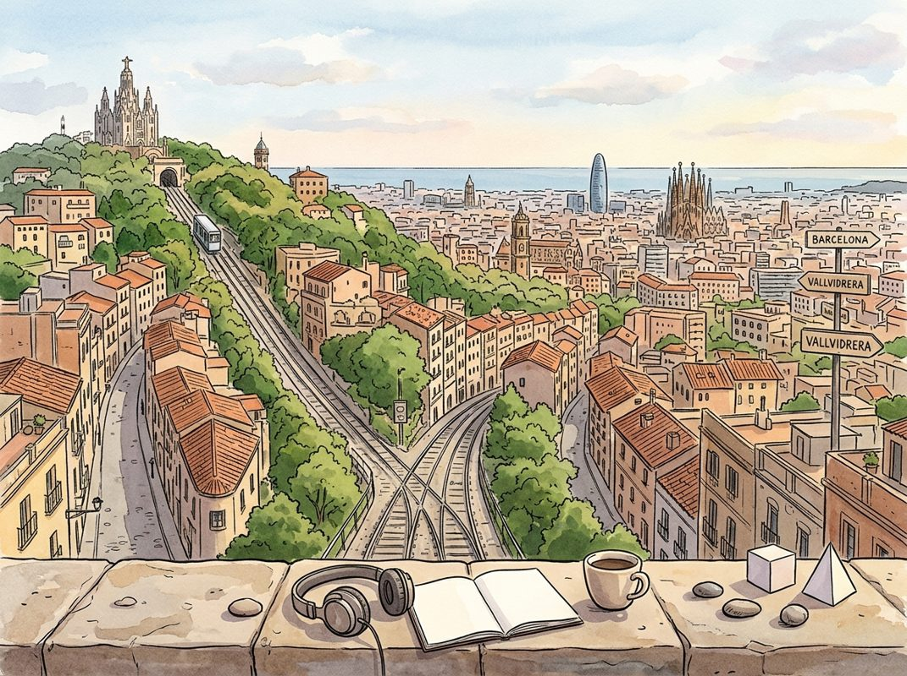

11/2

播客简报 2026-11-02
今日更新
Access the Sublime & Live Your Best Life | Robert Greene
来源：Huberman Lab
原链接：https://www.hubermanlab.com/episode/access-the-sublime-and-live-your-best-life-robert-greene
状态：已读部分音频 transcript
这期播客深入探讨了如何通过改变日常感知和专注力，超越惯性生活，体验到生命中无处不在的“崇高”感。它适合所有渴望摆脱生活麻木、重新发现世界奇妙之处，并寻求更深层生命意义的中文读者。
- 罗伯特·格林与“崇高”概念的引入：本期Huberman Lab播客邀请了著名作家罗伯特·格林，他以《权力的48条法则》和《精通》等畅销书闻名。主持人安德鲁·休伯曼对格林的《精通》推崇备至，认为其新书《崇高法则》所探讨的主题更为重要。格林指出，我们日常的意识体验常常被限制在一个“圈子”内，被熟悉感和重复性所束缚。他将“崇高”（Sublime）定义为一种超越这个圈子的体验，一种能震撼我们、让我们意识到存在着另一种现实的感受。这个词源于拉丁语“Sub Lumen”，意为“门槛之下”，暗示着通往未知之门的入口。这种体验是痛苦与愉悦的混合体：痛苦源于走出舒适区，愉悦则来自新奇和兴奋。
- 童年之失与意识的萎缩：格林观察到，许多人，尤其是在二三十岁时，对自己的“生命任务”感到迷茫。他认为这源于我们与童年时期那种纯粹的、未受污染的体验失去了连接。孩童时期，世界充满新奇，想象力活跃，一切都显得生动有趣。然而，随着成长，父母、老师和社会的声音不断介入，告诉我们应该喜欢什么、擅长什么，我们的意识圈子逐渐缩小，变得僵化和平淡。我们不再用想象力去感知世界，一切都变得“死气沉沉”。格林的目标是帮助人们重新激活、改变对生命本身的体验，从意识的根源处着手，让生活再次充满活力。
- 从个人困境中发现日常崇高：格林分享了他的个人经历，尤其是一次中风如何改变了他对“崇高”的看法。中风后，他无法像原计划那样通过旅行或使用致幻剂来寻求宏大的崇高体验。然而，在医院病床上，他透过窗户看到的世界，以及后来在自家后院观察到的昆虫、植物，都变得异常陌生、美丽和奇妙。他意识到，“崇高”并非只存在于亚马逊雨林或非洲大草原，它就在我们身边，存在于最普通的日常事物中——比如一个杯子，或者我们自身身体的奇迹（如手术后皮肤的愈合）。这种体验让他明白，我们常常因为关注事物的“用途”和“功能”而忽略了它们本身的奇妙存在。
- 古尔捷夫的“自我记忆”与感知重塑：播客深入探讨了如何通过改变思维来进入“崇高”体验。格林提到了亚美尼亚神秘主义者古尔捷夫的“自我记忆”（Self-Remembering）练习。古尔捷夫认为，人类大部分时间都在“梦游”，没有真正清醒地活着。通过有意识地、强烈地专注于当下某一刻或某一物体，并告诉自己“我正在记住它”，可以改变大脑的化学反应和感知方式。他的一位学生乌斯宾斯基通过练习，发现花瓶里的花开始变得不同，甚至在一次练习后，他发现自己不知不觉地从莫斯科的一端走到了另一端，这让他意识到平时生活中的“沉睡”状态。这种练习无需药物，通过冥想和专注就能重塑我们对世界的感知。
- 超越“琐碎”：塞尚的风景意识：休伯曼提出了一个担忧：这种对日常事物的过度关注是否会让人变得“怪异”，将意义赋予琐碎之物。格林反驳说，这并非创造意义，而是“看到事物本来的样子”，超越大脑为了避免信息过载而进行的过滤和修剪。他以画家塞尚为例，塞尚痴迷于视觉，通过专注观察来改变自己的视觉。塞尚认为，人类被赋予意识是为了将意识散布到万物之中，让风景也“活”起来。他能长时间凝视一棵杏树，看到杏子在阳光下生长、变甜，这在他看来是杏子与太阳之间“神经质”的关系。格林强调，我们并非纯粹理性的生物，我们的思想和情感可以赋予事物生命，这种感知是美丽的，而非疯狂。
James Talarico: America's Corrupt System Is Designed To Keep You Poor! | Texas Senate Candidate
来源：Diary of a CEO
原链接：
状态：已读完整音频 transcript
这期播客深入探讨了美国，特别是德克萨斯州的政治和经济系统性腐败如何导致贫富差距加剧，以及一位民主党参议员候选人James Talarico对此提出的解决方案，适合所有关心社会公平、经济结构和未来科技（如AI）对人类影响的中文读者。
- 个人背景与政治抱负：为人民服务的信仰：James Talarico是一位第八代德州人，其政治生涯深受单亲母亲的奋斗精神和信仰影响。他母亲曾为摆脱家暴，带着年幼的他艰苦求生，这塑造了他“为所爱之人而战”的信念。Talarico的养父Mark Talarico也对他产生了深远影响，教会他正直和关爱他人。他曾是一名教师，对教育和历史充满热情，并被高中同学预测未来可能成为总统。然而，Talarico表示无意竞选总统，他认为政治应是服务而非权力积累，主张限制任期以避免官员被权力腐蚀。他将竞选视为一种“事工”，旨在通过公共政策实践“爱邻如己”，为德州人民带来希望和改变。他认为自己的专长在于立法和建立联盟，而非行政决策，并以在共和党主导的州议会中成功推动60项两党合作法案为例证。
- 系统性腐败：贫富差距的根源：Talarico指出，美国经济系统并非真正的资本主义，而是“裙带资本主义”，其设计旨在让工薪阶层陷入贫困。他引用1971年的“鲍威尔备忘录”作为转折点，该备忘录为企业利益集团制定了瓦解“伟大社会”和“新政”成果的蓝图，通过巨额政治献金、媒体宣传和任命亲企业法官来巩固权力。过去50年，美国中产阶级财富占比从1970年的62%降至42%，而高收入家庭则从29%增至85%以上。他强调，这种“涓滴经济学”实际上是“盗窃”，导致少数富人财富激增，而普通民众生活成本飙升，工资停滞不前，尤其在疫情和通胀后，这种挤压感更加明显。他认为，这种不公并非不可逆转，而是政策选择的结果，可以通过不同的选择来重建一个奖励劳动而非财富的经济体系。
- 经济公平的政策愿景：Talarico提出了一系列旨在重建1950-60年代共同繁荣经济的政策。具体措施包括：提高最低工资，扩大加班费覆盖范围，让工人分享他们创造的财富；重建工会力量，赋能工人与雇主谈判；解决个人（医疗、学生、信用卡）和国家债务危机；投资教育（效仿二战后的《退伍军人权利法案》），扩大儿童税收抵免以支持家庭。他强调，所有这些改革都依赖于对最富有人群征收公平的税收。他认为，目前的税收体系存在大量漏洞，允许富人避税，例如将私人飞机和豪华游艇作为商业开支抵扣，以及资本利得税和附带权益漏洞。他指出，仅追缴前1%富人欠缴的税款，每年就能增加1720亿美元，足以消除美国的贫困。他主张探索财富税，确保富人承担应有的社会责任。
- 政治改革：经济公平的先决条件：Talarico认为，经济系统性腐败的根本原因在于政治系统的腐败。他直言德州政府存在腐败，并指出问题在于系统而非个别政客。例如，德州缺乏竞选捐款上限，导致外州亿万富翁向州长捐赠巨款，以推动将公共教育资金转移给富裕家庭的私立学校代金券计划。他强调，只有清理政治系统中的腐败，削弱企业特殊利益集团、企业政治行动委员会（PACs）和超级PACs的影响力，才能真正实现经济公平。他认为，目前的政治生态（如“公民联合”判决、不公正的选区划分、两党制、社交媒体）通过设计激励了极端主义和腐败。他呼吁建立一个“民有、民治、民享”的政府，而非“企业特殊利益集团有、治、享”的政府，并认为这是解决所有经济问题的首要步骤。
- 亿万富翁与财富税：联邦层面的解决方案：面对德州涌入的亿万富翁（如埃隆·马斯克）与州内儿童贫困并存的现象，Talarico表示并非“妖魔化”富人，而是呼吁他们承担社会责任。他指出，许多成功企业（如特斯拉）的崛起离不开纳税人的投资和公共基础设施。他认为，富人应“回馈”社会，确保下一代也能通过努力实现美国梦。他强调，由于各州之间存在税收竞争（如德州无州所得税），解决财富分配不均的问题需要联邦层面的政策干预。他赞扬了像马克·库班这样的“好”亿万富翁，他们利用财富和影响力解决社会问题（如降低处方药价格），而非仅仅通过慈善。他主张通过联邦税收政策改革，堵塞税收漏洞，甚至探索财富税，确保最富有的人支付其公平份额，并打破医疗等行业的垄断，以降低物价，促进真正的市场竞争。
The $300 Billion Structured Notes Market Is Booming
来源：Odd Lots
原链接：https://omny.fm/shows/odd-lots/the-300-billion-structured-notes-market-is-booming
状态：已读完整音频 transcript
本期播客深入探讨了规模达3000亿美元的结构性票据市场，揭示了这类产品如何为高净值投资者提供增强收益和下行保护，同时其复杂的对冲机制（涉及希腊字母指标）如何在市场波动时产生强大的技术性流动，甚至可能加剧市场波动，对于理解当前市场非基本面驱动因素的投资者而言，本期节目提供了宝贵的视角。
- 结构性票据：银行存款与衍生品的结合：本期Odd Lots播客邀请野村证券股票结构性票据国际主管Alex Micalizzi，深入剖析了结构性票据这一日益增长的市场。他将结构性票据形象地描述为“银行存款与衍生品结合的产物”。投资者向发行方（银行）投入资金（例如100美元），放弃传统利息，承担发行方的信用风险，以换取与股票挂钩的定制化收益。这种收益可以是参与股票上涨（通过看涨期权或看涨价差），也可以是获取更高收益（通过出售看跌期权获得溢价）。Alex强调，银行通过将这些基础期权进行组合和包装，能够创造出满足客户特定风险偏好和收益目标的定制化产品。这就像华尔街的“水果摊”理论，银行批发购买各种“水果”（期权），然后根据客户需求切片、组合，提供任何他们想要的风险敞口或对冲工具。
- 谁是结构性票据的买家？为何青睐？：结构性票据的主要买家是高净值个人投资者，他们通常通过私人银行渠道购买。这些投资者之所以青睐结构性票据，是因为它们提供了一种在不直接购买股票的情况下，获取更高收益或实现特定保护目标的途径。例如，在AI概念股持续上涨的背景下，一些投资者希望获得比直接持有股票更高的收益（节目中提到CoreWeave的40%年化收益率），或者在市场估值过高时寻求下行保护。Alex指出，美国市场今年注册的结构性票据规模预计将达到3000亿美元，远超去年的2000亿美元。与亚洲市场（如日本零利率时期为寻求收益而兴起）不同，美国投资者更多将其视为一种分散投资、提供下行保护和获取投资收入的工具，而非单纯追求最高收益。
- 自动赎回与最差表现挂钩：高收益的秘密：自动赎回（Autocallable）是结构性票据中一种常见的增强收益机制。这类产品设定了定期观察日（如每三或六个月），如果挂钩资产（股票或指数）在观察日高于初始水平，产品就会提前“敲出”（终止），投资者收回本金并获得已承诺的收益。这种机制之所以能提供更高收益，是因为提前敲出意味着发行方承担的看跌期权风险降低。然而，这也带来了再投资风险：如果市场持续上涨导致产品频繁敲出，投资者可能面临在较低波动率环境下以更低收益率再投资的困境。更进一步的复杂产品是“最差表现挂钩”（Worst-of）自动赎回票据，它同时挂钩多个资产（如标普500、纳斯达克、罗素2000），只有当其中表现最差的资产达到敲出条件时，产品才能终止。这种设计因其更高的复杂性和风险（需要模型化资产间的相关性）而能提供更高的收益。
- 对冲的艺术与挑战：希腊字母的舞蹈：发行方在出售结构性票据后，需要进行复杂的对冲以管理风险。Alex详细解释了对冲中涉及的“希腊字母”：首先是Delta（Δ），衡量产品价格对标的资产价格变化的敏感度，发行方会通过买卖标的资产来对冲掉方向性风险。其次是Vega（ν），衡量产品价格对隐含波动率变化的敏感度。由于结构性票据包含大量期权（如看跌期权和敲出特征），发行方通常会通过在公开市场出售期权来对冲Vega。然而，这种对冲并非完美，例如，发行方可能用短期期权对冲长期产品，导致对冲不匹配。当市场波动加剧，产品未能敲出，存续期延长时，发行方需要对冲的Vega会增加，而此时市场可能缺乏足够的买方来吸收这些Vega，从而形成供需失衡。此外，Gamma（Γ）——Delta对标的资产价格变化的敏感度——也至关重要，当发行方处于“空头Gamma”状态时，他们被迫在市场下跌时卖出，上涨时买入，这可能加剧市场波动。
- 市场动荡下的连锁反应与建模难题：当市场进入动荡期，结构性票据的对冲机制可能产生意想不到的市场影响。例如，如果市场持续下跌，许多自动赎回产品无法敲出，其存续期延长，导致发行方需要对冲的Vega头寸大幅增加。同时，市场上的期权买家（如对冲基金）可能因投资组合变化而减少对期权的需求，使得发行方难以有效对冲，被迫在市场下跌时出售期权，进一步压低波动率。Alex提到，这种现象可能导致“现货上涨，波动率也上涨”的异常市场状态。此外，结构性票据的建模也面临巨大挑战，特别是多资产挂钩产品中的相关性、远期风险以及“波动率的波动率”（vol of vol）等难以观测的参数，使得模型假设与实际市场表现之间存在偏差，增加了发行方的风险管理难度。
历史精选
Oprah (Harpo Studios)
来源：Acquired
状态：未读全文：需要音频转写
材料不足：这期需要 transcript 或更完整正文后再做全篇摘要。
- 当前只有节目简介或网页正文；这是播客音频，必须获取 transcript 后才算读完整期。
Moody’s: Aaa Business Model - [Business Breakdowns, EP.142]
来源：Business Breakdowns
原链接：https://joincolossus.com/episodes/21209637/yacktman-moodys-aaa-business-model
状态：已读网页 transcript
这期播客深入剖析了穆迪（Moody's）这家信用评级巨头的商业模式，揭示了其如何凭借强大的护城河、网络效应和独特的市场地位，构建起一个“Aaa”级别的稳健业务。它适合所有对金融服务、商业模式分析、护城河理论以及资本市场运作感兴趣的投资者和商业分析师。
- 穆迪的起源、演变与市场主导地位：穆迪公司由约翰·穆迪于1909年创立，最初旨在通过发布债券手册和统计数据，标准化信用信息并扩大其获取途径。2000年，穆迪从邓白氏（Dun & Bradstreet）分拆，成为一家独立的上市公司。如今，它已成长为一家市值近750亿美元、年营收约60亿美元、利润率高达45%的庞大企业。穆迪与标普全球（S&P Global）和惠誉（Fitch）共同构成了全球信用评级市场的三巨头，三者合计控制了全球95%的市场份额，形成了极高的行业壁垒和寡头垄断格局。本期播客邀请了YCG Investments的创始人兼总裁Brian Yacktman，共同探讨了穆迪的商业起源、金融危机对其轨迹的影响，以及信用评级在投资生态系统中的核心作用。
- “Aaa”级商业模式的核心要素：穆迪的商业模式被形容为“Aaa”级别，这源于其强大的护城河和独特的收入结构。其核心业务是提供信用评级服务，帮助投资者评估债券等金融工具的信用风险。穆迪的收入主要来自发行人付费模式，即企业或政府为获得评级而向穆迪支付费用。这种模式确保了稳定的收入流，并且由于评级结果的权威性和市场认可度，客户转换成本极高。穆迪的业务优势体现在其高利润率（约45%）、强大的品牌信誉以及在全球金融市场中不可或缺的地位。这种模式使其能够持续产生可观的现金流，并抵御市场波动。
- 强大的进入壁垒与网络效应：穆迪所处的信用评级行业拥有极高的进入壁垒。首先，获得监管机构的认可和信任需要漫长的时间和巨大的投入。其次，信用评级机构的价值在于其评级的广泛接受度和市场影响力，这需要长期的历史积累和公信力。穆迪、标普和惠誉这三家公司凭借其悠久的历史、庞大的客户基础和深厚的专业知识，形成了强大的网络效应：越多的发行人使用其评级，其评级就越被投资者认可；越多的投资者依赖其评级，发行人就越需要获得其评级。这种正反馈循环使得新进入者几乎无法撼动现有巨头的地位，进一步巩固了穆迪的“护城河”。
- 全球金融危机（GFC）的深远影响：2008年的全球金融危机对穆迪的业务轨迹产生了深远影响。危机爆发前，信用评级机构因对次级抵押贷款证券等复杂金融产品给出过高评级而受到广泛批评，被认为是危机爆发的推手之一。危机后，穆迪面临了前所未有的监管审查和公众质疑。然而，讽刺的是，危机反而进一步巩固了其市场地位。监管机构为了加强金融体系的稳定性，反而更加依赖信用评级作为风险管理和资本充足率计算的工具，这使得评级机构的服务需求不降反升。同时，危机也促使穆迪加强了内部风险管理和评级方法论的改进，使其业务模式在经历冲击后变得更加稳健。
- 经济敏感性与竞争格局：尽管穆迪的业务模式稳健，但它并非完全不受经济周期影响。其收入与资本市场的发行活动密切相关，当经济下行或市场不确定性增加时，债券发行量可能会减少，从而影响穆迪的评级收入。然而，由于其服务的刚性需求和发行人付费模式，这种影响通常是有限且可控的。在竞争格局方面，穆迪与标普全球是最大的两个竞争对手，两者在市场份额、业务范围和盈利能力上都非常接近。它们之间的竞争主要体现在评级质量、客户服务和技术创新上，但由于行业的高度集中，这种竞争更多是寡头之间的博弈，而非价格战。